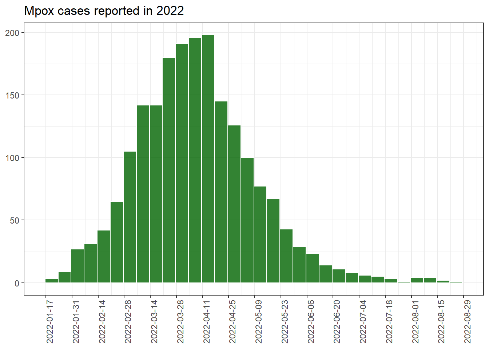

# Ensures the package "pacman" is installed
if (!require("pacman")) {
install.packages("pacman") }
# install (if necessary) from CRAN and load packages to be used
pacman::p_load(
rio, # importing data
skimr, # get overview of data
janitor, # data cleaning and tables
lubridate, # working with dates
epikit, # to create age categories
gtsummary, # summary statistics, tests and regressions
apyramid, # plotting age pyramids
tidyverse # data management and visualization
)Descriptive analysis of the 2022 Mpox outbreak in Europe
For instructions on how to use our case studies, [see here.] We welcome feedback and suggestions via contact@appliedepi.org. Discuss the case study at [community].
Scenario
It is May 2022 and Mpox has just been reported for the first time across 5 countries in Europe. You have been requested to provide a basic descriptive analysis to the European Centre for Disease Prevention and Control (ECDC).
You are given access to:
- Linelists with cases collated by the five countries
- Datasets with aggregate cases from open sources
Let’s go!
Objectives
In this case study you will:
- Explore different types of files and how they can be imported in R.
- Perform basic data cleaning, e.g., changing the variable type, recode variables, aggregate and filter.
- Perform a basic descriptive analysis using tables and graphs
Step 1. Set up
1.1 Get started in R Studio
Start by setting up a reproducible and well-organized workflow. This will make it easy to rerun your analysis whenever needed.
Tasks:
- Set up a R Studio project
- Set up clear sub-folders where your code, data, and outputs will go
- Create an R script, or an Rmarkdown file if you prefer. Make sure the script purpose, date, and author are written as comments at the top.
- Extra: Ensure your working language in RStudio is appropriate (e.g. English for this exercise)
Click to read a hint
Create a folder where all the work in this case study will go. For example, create ‘mpox_analysis’ on your computer desktop. Create your R Studio project to be based in this folder.
We suggest creating the following sub-folders: scripts (for your code), data (for your data), and outputs (for your analytical outputs).
Click to see a solution (try it yourself first!)
To create an Rstudio project in your new folder, clicking New Project… in the top left of your R Studio, then “Existing Directory” (because your folder area already exists), then Browse to select your new folder. For more information, look at the [R projects] section of the Epi R Handbook (https://epirhandbook.com/new_pages/r_projects.html)
Start a new R script by clicking New File… in the top left of your R Studio, then “R Script”. Save it immediately in the appropriate place, e.g. in a ‘scripts’ subfolder of your R Project.
At the top of your new R scipt, write some essential information like your name, the purpose of the file, and the date.
Your R locale determines the language and regional settings used for things like date formats and translations. If your locale is different from the language you want for your report (e.g., a French locale vs. an English report), you can change it to English by running Sys.setlocale(“LC_ALL”, “English”). Include this in your script if needed, or skip it if your locale is usually appropriate. More information on this is available in the [instructions] page.
1.2 Install/load packages
Next in your R script, you need to install and load the necessary R packages. This ensures that the functions you need are available for your analysis.
You will need the following packages: rio (for importing data), janitor (for cleaning data), lubridate (for cleaning dates), skimr (for reviewing data), epikit (for epi-related tasks), gtsummary (for presentation-ready tables), apyramid (for age-sex pyramids), and tidyverse (for general data manipulation/science tasks).
As you start, your trusted colleague nudges you and whispers “I’ve heard that a great way to manage your packages is with the {pacman} package”.
Over to you!
Click to see a solution (try it yourself first!)
Use the function p_load() from {pacman} for this task. You provide the function with a list of packages that you want to use. It will take two steps per package: 1) Check if the package is installed on your computer, and install it if necessary, then 2) Load the package so it can be used during this R session.
If you don’t already have pacman installed, you will need to install it the “traditional way” first, with install.packages().
Note that the order of packages in your p_load function can be important. If two packages have the same function names (e.g. select() in tidyverse and select() in MASS, which do different things), then R will use the function from the most recently loaded package. To prioritize functions from tidyverse, which are commonly used for data manipulation and visualization, load tidyverse last.
Step 2: Download and import the data
2.1: Download the data
ECDC provides you with two files for your analysis:
- A case-level linelist (“mpox_linelist.xlsx”) with case information from five countries (countries A - E)
- An aggregate table (“mpox_aggregate_table.csv”) for those countries with cumulative case counts per day.
They provide it to you via AppliedEpi’s very useful data repository, which you can access using the {appliedepidata} package. So first you need to download these two files to your own computer, as follows:
- Install the {appliedepidata} package from GitHub using the install_github functions in the remotes package. Install {remotes} if you need to first.
# Install remotes if you need to (so you can install a package from GitHub)
pacman::p_load("remotes")
# Use the install_github function from remotes to install appliedepidata
remotes::install_github("appliedepi/appliedepidata")- Save the two datasets into a specific folder using the save_data() function from {appliedepidata}, by running the code below. The example below saves the data into a ‘data’ subfolder within the R project. Note that if you do not specify a location within the ‘path’ argument of the function, a window will pop up asking you to manually select a folder.
# Save down the two mpox files using the save_data() function from appliedepidata
appliedepidata::save_data("mpox_linelist",
path = "data")
appliedepidata::save_data("mpox_aggregate_table",
path = "data")2.2 Import the data
Great! Thanks ECDC and Applied Epi! Now it’s time to import the data into R Studio so you can analyse it.
Task: Import the downloaded case-based and aggregated data into your R environment. Ideally you want to use one function for both datasets, despite one being a csv and the other an xlsx file.
Click to read a hint
Use the import function from the {rio} package, which can recognise and import different file types. It replaces importing functions that are specific to the file type, such as read.csv() from {base} for .csv files and read_excel() from {readxl} to import .xlsx files.
If you feel you need to know more about importing functions, read the Import and export chapter of the EpiRhandbook.
Click to see a solution (try it yourself first!)
# Import data --------------
# Case-based data
mpox_linelist_raw <- import("data/mpox_linelist.xlsx")
# Aggregated data
mpox_agg_raw <- import("data/mpox_aggregate_table.csv")Step 3: Explore the data
You need to understand what the data looks like as a first step, to inform your analysis.
Tasks: Take a look at the different data frames and determine:
- The number of columns and observations (e.g. their dimensions)
- The class of their columns and whether it matches its nature (e.g., are “dates” considered “dates” by R?)
- If the contents of columns are clean and standardized in the mpox linelist (e.g. gender, clinical symptoms, outcome, hiv status and sexual orientation). Do you need to recode any of them?
- How unknown or missing data is categorised in these columns. Do these values need to be standardized?
Click to read a hint
An efficient function for initial data exploring is skim() from the {skimr} package, as it gives you a lot of information on data structure and content.
You can also use the function tabyl() from {janitor}, to get counts and percentages of every category in the data column, one by one. These get printed to your RStudio console.
Finally, you can use the tbl_summary() function from gtsummary to get see the distribution of values within multiple variables at once. The output from tbl_summary() is seen in the Viewer of your RStudio.
Decide which one you prefer!
Click to see a solution (try it yourself first!)
# Explore the dimensions of the two data objects
skim(mpox_linelist_raw)
skim(mpox_agg_raw)
# Explore the values of different categorical columns in the mpox linelist: with tabyl
tabyl(mpox_linelist_raw, Gender)
tabyl(mpox_linelist_raw, ClinicalSymptoms)
tabyl(mpox_linelist_raw, Outcome)
tabyl(mpox_linelist_raw, HIVStatus)
tabyl(mpox_linelist_raw, SexualOrientation)
# Explore the values of different categorical columns in the mpox linelist: with tbl_summary
mpox_linelist_raw %>%
select(Gender, ClinicalSymptoms, Outcome, HIVStatus, SexualOrientation) %>%
tbl_summary()Step 4: Clean the data
4.1: Clean the case-based data
When exploring the case-based data, you may have noticed that there are a few things that we need to take care of before we can start doing further analysis. Firstly, names contain a mixture of upper and lower case letters. Whilst this isn’t in itself a problem, R is case-sensitive, so having all names in lower case may make our life easier. Also, date columns are not consider “Dates” by R, but instead they are being consider as “Character”, which means they are being considered as nominal data. This would give us problems when plotting by Dates. Another issue is that some columns have categories that may not be intuitive for all. For example, Gender is categorised with “F”, “M”, “O” and “UNK”. The column Outcome as “A” and “UNK”. We should give them more appropriate categories. Finally, it is important that missing data is considered as “missing” in R. That means that R treats it as “NA”. In the column clinical symptoms, for example, missing data is an empty cell, not “NA”. R is considering this as another nominal category instead of missing, and will consider it this way in any analysis or output you produce.
Tasks:
- Create a clean version of your case-based data making all cleaning changes in a single piping command
- Change all column names to lower case.
- Convert all date columns to class “Date”.
- Use the column “DateOfNotification” to create a column called “week_date” which has the week of notification, starting on Mondays.
- Transform all empty cells into “NA”
- Recode “Gender” categories into: “Female”, “Male”, “Other” and “Unknown”
- Recode “Outcome” categories into: “Alive” and “Unknown”
- Recode HIV status into: “Positive”, “Negative” and “Unknown/Missing”
- Recode Sexual orientation into: “Bisexual”, “Heterosexual”, “MSM/homo or bisexual male” and “Unknown/missing”.
- Create a column called “age_group” with ten year age groups and the oldest group being 70+
- Check that all changes have been made correctly
Click to read a hint
To convert all names to lower case, rather than renaming each column you may use the function clean_names() from the {janitor} package, which will do it automatically for all columns. Use lubridate functions to transform date columns into “Date” class, you can do this one by one, or you could do all at the same time using the across() function from {dplyr}. If you feel you need to know more about transforming dates read the chapter Working with Dates from the EpiRhandbook. If you are not sure how to use the across() function, you can also read the section on Transform multiple columns.
One simple way to create the “week_date” column would be to use the function floor_date() from {lubridate}. Take a look at the documentation to understand how it works and how to make Monday the starting day of the week.
There are different functions that we can use to recode. We propose three: The function recode() from {dplyr}, the function ifelse() from {base} and the function case_when() from {dplyr}. If you want to know more about these functions, look that the section on Re-code values from the EpiRhandbook.
To create the age groups, explore the function called age_categories() from the {epikit} package.
Click to see a solution (try it yourself first!)
# Create a new object called mpox_linelist which is the clean version of the raw data, applying the cleaning functions
mpox_linelist <- mpox_linelist_raw %>%
clean_names() %>% # standardises names and puts all into lower case
#(Note: after this point all column names have changed)
mutate(date_of_notification = ymd(date_of_notification)) %>% #transform ONE column into date
mutate(across(starts_with("date"),
.fns = ~ ymd(.x))) %>% #transforms ALL columns starting with "date" into dates
mutate(week_date = floor_date(date_of_notification, # create week column with Monday start
unit = "week",
week_start = "Monday")) %>%
mutate(across(where(is.character),
.fns = ~ ifelse(.x == "", NA, .x))) %>% #transforms empty cells into NA across all character columns
mutate(gender = recode(gender,
"F" = "Female",
"M" = "Male",
"O" = "Other",
"UNK" = "Unknown")) %>%
mutate(across(where(is.character),
.fns = ~ ifelse(.x == "UNK", "Unknown", .x))) %>% #transforms UNK to Unknown across all character columns
mutate(outcome = ifelse(outcome == "A", "Alive", outcome)) %>% #we can recode as well with ifelse if we want to change only one or two categories
mutate(hiv_status = case_when(hiv_status == "NEG" ~ "Negative", #for more complex recoding better case_when
hiv_status == "POS" ~ "Positive",
TRUE ~ "Unknown/missing")) %>%
mutate(sexual_orientation = case_when(sexual_orientation == "BISEXUAL" ~ "Bisexual",
sexual_orientation == "HETERO" ~ "Heterosexual",
sexual_orientation == "MSM" ~ "MSM/homo or bisexual male",
TRUE ~ "Unknown/missing")) %>%
mutate(age_group = age_categories(age,
lower = 0, #set up the lower age
upper = 70, #set up the upper age
by = 10)) #set up the age breaks
# Check that all changes have been made correctly
skim(mpox_linelist)
tabyl(mpox_linelist, gender)
tabyl(mpox_linelist, clinical_symptoms)
tabyl(mpox_linelist, outcome)
tabyl(mpox_linelist, hiv_status)
tabyl(mpox_linelist, sexual_orientation)
tabyl(mpox_linelist, week_date)
tabyl(mpox_linelist, age_group)4.2: Clean the aggregated data
In a similar way, clean the aggregated data by:
- Standardising names to lower case
- Ensure that date of reporting is of class “Date”
- Create a column called “week_date” with the week of reporting starting on Monday
Click to see a solution (try it yourself first!)
# Check class of date of reporting column
class(mpox_agg_raw$DateRep) #It is a date, so we do not need to change its class
# Create a new object called mpox_agg which is the clean version of the raw data, applying the cleaning functions
mpox_agg <- mpox_agg_raw %>%
clean_names() %>% # standardises names and puts all into lower case
#(Note: after this point all column names have changed)
mutate(week_date = floor_date(date_rep, # create week column with Monday start
unit = "week",
week_start = "Monday")) Step 5: Describe outbreak by person, place, and time
You’re now aware that you have information on region of residence, dates of notification, age, and sex of cases. You can use this to build a picture of how the outbreak is progressing in Europe.
5.1: Describe geographic distribution of cases
Task: Using the case-based data, create a table with the number of cases by country
Click to read a hint
An easy way to produce tables is using the function tbl_summary() from {gtsummary} package
Click to see a solution (try it yourself first!)
# Create an object with the table
cb_country_table <- mpox_linelist %>%
select(country) %>% #select the column that we want to use in the table
gtsummary::tbl_summary() # create the table
# Ask R to print the table
cb_country_table| Characteristic | N = 2,0001 |
|---|---|
| country | |
| CountryA | 816 (41%) |
| CountryB | 391 (20%) |
| CountryC | 474 (24%) |
| CountryD | 217 (11%) |
| CountryE | 102 (5.1%) |
| 1 n (%) | |
5.2: Describe cases over time
Tasks:
- Using the case-based data, create an epicurve by week of notification
- Using the case-based data, create an epicurve by week of notification in which the colour of the bins represents the number of cases by country
- Using the case-based data, create a heat plot with the number of cases by country and week of notification.
Click to read a hint
To do the epicurve, you can use ggplot() and geom_histogram(), which will automatically aggregate your data. If you are unsure on how ggplot() works, read the EpiRhandbook chapter on Epidemic curves.
An alternative approach is to first aggregate the number of cases by week of notification. You can do this using the functions group_by() and summarise() from {dplyr}. If you are unsure on how to do this, review the Grouping data chapter of the EpiRhandbook.
Once you have an object with aggregated cases by week of notification, create the epicurve using ggplot(). If want a dynamic colour inside the bins, you need to assign the fill to the column you want to use (country) and place it inside the aesthetics
Heat plots can be useful to understand how the epidemic evolved in different countries. You will need to aggregate your data by country and week of notification. You can do this using the functions group_by() and summarise() from {dplyr}. If you are unsure on how to do this, review the Grouping data chapter of the EpiRhandbook. Then, use the geom geom_tile() to create a heat plot. If you’re unsure on how to do this, read the EpiRhanbook section on Heat Plots
Click to see a solution (try it yourself first!)
# Epicurve by notification
epicurve_epox <- ggplot(data = mpox_linelist, #data to be used
aes(x = week_date)) + #with geom_histogram() you only need to assign the x axis
geom_histogram(binwidth = 7, #binwidth 7 ensures that the width represents 7 days
fill="darkgreen", #colour inside the bins
color="white", #outline colour of the bins
alpha=0.8) + #transparency of the bins
scale_x_date(breaks = "2 weeks") + #set the x axis labels to two week intervals
labs(title="Mpox cases reported in 2022") + #add a title
theme_bw() + #assign a predefined theme
theme(axis.text = element_text(size=9), #define the font size of the axis text
axis.title = element_blank(), #remove the titles of the x and y axis
axis.text.x = element_text(angle=90)) #rotate the x axis text
epicurve_epox
# Epicurve by notification and country
epicurve_epox_country <- ggplot(data = mpox_linelist, #data to be used
aes(x = week_date,
fill = country)) + #now the fill needs to be inside aes()
geom_histogram(binwidth = 7, #binwidth 7 ensures that the width represents 7 days
color="white", #outline colour of the bins
alpha=0.8) + #transparency of the bins
scale_fill_viridis_d() + #we change the predefined colours
scale_x_date(breaks = "2 weeks") + #set the x axis labels to two week intervals
labs(title="Mpox cases reported by country in 2022") + #add a title
theme_bw() + #assign a predefined theme
theme(legend.position = "bottom", #legend position to the bottom
axis.text = element_text(size=9), #define the font size of the axis text
axis.title = element_blank(), #remove the titles of the x and y axis
axis.text.x = element_text(angle=90), #rotate the x axis text
legend.title = element_blank()) #remove title of legend
epicurve_epox_country# Heatmap of cases by country over time
hp_epox <- mpox_linelist %>% #we first group the data by country and week of notification
group_by(country, week_date) %>%
summarise(n_cases = n(), .groups = "drop") %>%
#now we can use the pipe to directly plot the resulting data from the grouping
ggplot(aes(x = week_date,
y = country, #we want the countries to be in the y axis
fill = n_cases)) + #the colour of the tiles should depend on the number of cases
geom_tile(colour = "black") + #this is the outline colour of each tile
scale_fill_gradient( #here we define the colours we want to use in the gradient
low = "lightgreen",
high = "red") +
scale_x_date(breaks = "2 weeks") + #set the x axis labels to two week intervals
labs(
title= "Mpox cases by country and week of notification",
fill = "Number of cases"
) +
theme_bw() +
theme(legend.position = "bottom", #legend position to the bottom
axis.text = element_text(size=9), #define the font size of the axis
axis.title = element_blank(), #remove the titles of the x and y
axis.text.x = element_text(angle=90)) #rotate the x axis text
hp_epox 5.3: Describe demographic characteristics
Now that we have created some outputs by time and place, we should focus on the “person” element. The two most important demographic characteristics are usually age and gender. In the case we are seeing, we may also want to explore the sexual orientation of cases.
Task:
- Explore the number of cases by age group and gender.
- Create a table with number and percentages of cases by sexual orientation
Click to read a hint
The easiest way to explore both columns (age_group and gender) would be to use the tabyl() function from {janitor}. Then, to create the age pyramid explore the function age_pyramid() from the {apyramid} package. You can find more about this function in the EpiRhandbook chapter Demographic pyramids and Likert-scales
To create the table by sexual orientation, consider using the function tbl_summary() from {gtsummary}
Click to see a solution (try it yourself first!)
# Explore gender and age group columns
tabyl(mpox_linelist, gender) gender n percent
Female 36 0.0180
Male 1960 0.9800
Other 1 0.0005
Unknown 3 0.0015tabyl(mpox_linelist, age_group) age_group n percent valid_percent
0-9 1 0.0005 0.0005007511
10-19 33 0.0165 0.0165247872
20-29 396 0.1980 0.1982974462
30-39 766 0.3830 0.3835753630
40-49 524 0.2620 0.2623935904
50-59 204 0.1020 0.1021532298
60-69 64 0.0320 0.0320480721
70+ 9 0.0045 0.0045067601
<NA> 3 0.0015 NA# Table with sexual orientation
tab_sor <- mpox_linelist %>%
select(sexual_orientation) %>%
tbl_summary(label = list(sexual_orientation ~ "Sexual Orientation"))
tab_sor| Characteristic | N = 2,0001 |
|---|---|
| Sexual Orientation | |
| Bisexual | 7 (0.4%) |
| Heterosexual | 46 (2.3%) |
| MSM/homo or bisexual male | 833 (42%) |
| Unknown/missing | 1,114 (56%) |
| 1 n (%) | |
5.4: Describe clinical characteristics
Now, let’s summarise the main clinical information that we have in our case-based data frame.
Tasks:
Create a bar plot with the proportion of each type clinical symptoms
Create a table with the number and percentage of cases by outcome
Click to read a hint
To create bar plots we can use geom_bar() or geom_col() depending on the nature of our data. If we aggregate first, we can use geom_col(), otherwise we should use geom_bar(). There is a function of the {gtsummary} package called add_p() which enables you to easy calculate a statistical test across groups. If you want to know more read the section on gtsummary package of the EpiRhandbook.
Click to see a solution (try it yourself first!)
# Bar plot with clinical symptoms
bar_clinical <- mpox_linelist %>%
drop_na(clinical_symptoms) %>% # we remove those with missing clinical symptoms
group_by(clinical_symptoms) %>%
summarise(n_cases = n(), .groups = "drop") %>%
mutate(prop=(n_cases/sum(n_cases))*100) %>% # we create a column with proportions
ggplot(aes(y = reorder(clinical_symptoms, prop), x = prop)) + # the reorder function ensures that categories are ordered by proportion in the graph
geom_col(fill = "darkgreen") +
labs(
title= "Frequency of clinical symptoms in Mpox cases",
y = "",
x = "Number of cases"
) +
theme_bw() +
theme(axis.text = element_text(size=9)) #define the font size of the axis
bar_clinical 
# Table with number and percentage of cases by outcome
tab_outcome <- mpox_linelist %>%
select(outcome) %>%
tbl_summary(label = list(outcome = "Reported outcome")) # with the argument "label" we can change how the column name is displayed
tab_outcome| Characteristic | N = 2,0001 |
|---|---|
| Reported outcome | |
| Alive | 1,405 (70%) |
| Unknown | 595 (30%) |
| 1 n (%) | |
Step 6: Reviewing data quality
It is important to understand how timely, complete, and valid your data is, if it will be the basis of understanding an outbreak and making decisions. For example - you will need to be mindful of reporting delays when interpreting epicurves, and be aware of how complete different sources of data are compared to each other.
6.1: Delay between date of onset, diagnosis and notification
Tasks
Calculate median time from symptom onset to diagnosis and from diagnosis to notification, both overall and by country
Assess visually the number of cases by calendar period and type of date (onset, diagnosis and notification)
Click to read a hint
To plot together the different dates you may need to transform your data from “wide” to “long” form. What we call “pivoting” in R. The objective is to have a column with the different date categories (onset, diagnosis and notification) and another column with their date value. If you are unsure on how to do this, have a look at the Pivoting data chapter of the EpiRhandbook. Then, try to plot with the daily values, but if that’s not easy to interpret you may want to aggregate cases by week.
Click to see a solution (try it yourself first!)
# Estimate delay between onset and diagnosis, and between diagnosis and notification
delay_db <- mpox_linelist %>%
mutate(delay_diag = as.numeric(date_of_diagnosis - date_of_onset)) %>% #we create variables with difference between dates, we transform them in numeric to be able to then calculate measures of central tendency
mutate(delay_not = as.numeric(date_of_notification - date_of_diagnosis))
summary(delay_db$delay_diag) #the summary will give us measures of central tendency and dispersion Min. 1st Qu. Median Mean 3rd Qu. Max. NA's
-2.000 4.000 7.000 7.758 10.000 66.000 897 summary(delay_db$delay_not) Min. 1st Qu. Median Mean 3rd Qu. Max. NA's
-46.0000 -2.0000 0.0000 -0.6078 1.0000 23.0000 715 delay_country <- delay_db %>% #here, we group by country and summarise the median to compare across countries
group_by(country) %>%
summarise(median_delay_diag = median(delay_diag, na.rm = T),
median_delay_not = median(delay_not, na.rm = T))
delay_country# A tibble: 5 × 3
country median_delay_diag median_delay_not
<chr> <dbl> <dbl>
1 CountryA 7 0
2 CountryB 7 0
3 CountryC 6 0
4 CountryD 7 0
5 CountryE 6 0# Line graph with the different dates
dates_longer <- mpox_linelist %>% # use the variables of the dates and make a longer dataset. In the pivot_longer() command we select the columns which we want to expand in long format and transform the dataset
pivot_longer(
cols=starts_with("date_"), # all columns starting with "date_" will be taken
names_to = "indicator", #the names of the columns will be placed in a single column called "indicator"
values_to = "date") # the values (which are dates in this case) will be placed in a column called "date"
dates_longer_week <- dates_longer %>%
mutate(week_date = floor_date(date, unit = "week", week_start = "Monday")) %>% # we create a week column
group_by(indicator, week_date) %>%
summarise(n=n(), .groups="drop") %>% # we group and summarise to have the number of cases by date type and week
drop_na(week_date) # we drop the cases with no data on dates
plot_date_delay <- ggplot(data = dates_longer_week,
aes(x = week_date,
y = n,
color=indicator)) +
geom_line(linewidth = 1.5) +
scale_x_date(breaks = "2 weeks")+
theme_bw() +
theme(legend.position = "bottom",
axis.text = element_text(size=9),
axis.title = element_blank(),
axis.text.x = element_text(angle=90),
legend.title = element_blank()) +
labs(title="Mpox cases reported in 2022, by date of onset, diagnosis and notification.")
plot_date_delay
6.2: Compare case-based and aggregated data
Task: Create a plot comparing the number of cases reported to through the case-based flow and through the aggregated flow in each country.
NOTE: Take into consideration that the column on cases in the aggregated data frame reports the cumulative number of cases.
Click to see a solution (try it yourself first!)
# Create a data frame with the overall number of cases reported through the aggregated flux
mpox_agg_country <- mpox_agg %>%
group_by(country) %>%
filter(date_rep == max(date_rep)) %>% # as we have cumulative data, we keep only the last week (after grouping by country)
select(-date_rep, -week_date) %>% # remove unnecessary columns
mutate(source = "aggregated") # we create this column to distinguish the numbers from the case-based flux
# Create a data frame with the overall number of cases reported through the case-based flux
mpox_linelist_country <- mpox_linelist %>%
group_by(country) %>%
summarise(cases = n(), .groups = "drop") %>%
mutate(source = "case_based") # we create this column to distinguish the numbers from the
# We append both data frames. Remember this is different from merging
total_data <- bind_rows(mpox_linelist_country, mpox_agg_country)
# We create a graph to compare the cases reported in both sources
graph_comp <- ggplot(data = total_data,
aes(x = source,
y = cases,
fill = source)) +
geom_col(position = "dodge") + #position dodge puts bars one next to each other, instead of "stacked"
facet_wrap(~ country, scales = "free_y") + # this command gives us one graph per country. The argument scales is used to allow each y axis scales to adjust to the data
scale_fill_viridis_d(
labels = c("Aggregated", "Case-based") # this function changes the colours, but with the argument "labels" we can change the text of each fill.
) +
labs(
title = "Number of cases of Mpox reported in 2022 according to source of data",
fill = "Source",
x = "",
y = "Total number of cases"
) +
theme_bw() +
theme(axis.text.x = element_blank(), # we remove the text of the x axis because it is already present in the legend
axis.ticks.x = element_blank()) # we also remove the ticks for aesthetic purposes
graph_comp
Final thoughts
Well done! Through your analysis you now understand the magnitude of the outbreak so far, where and when it spread, which demographic groups are most affected, and how the disease actually manifests in terms of symptoms and severity. ECDC is very happy with your work.
By coding this up in R, this analysis should be reproducible, meaning you can quickly update it with new data and keep monitoring the outbreak. To further practise reproducible reports, [link to RMarkdown].
Case study information
Authorship
Original authors: Xanthi Andrianou, Gianfranco Spiteri (ECDC EI Group)
Data source: Fictional data provided by ECDC EI Group for training purposes
| Date | Changes made | Version | Author |
|---|---|---|---|
| October 2021 | First draft | 1 | Xanthi Andrianou |
| June 2024 | Adapted to case study template | 1.1 | Alberto Mateo Urdiales |
Terms of Use